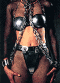

|
The Blacksmith and the Dancing Lady | 1, 2
 ND SO IT PASSED that a thousand men came to the castle from far and wide to try their hand at snatching the prize of both wife and marriage bounty. The first attempt was made by Allan of Tewsbury, a knight of the Holy Rood, and he cursed and screamed when the key caught fire in his fingers, and burned through his glove like molten lead. Arnulf di Ceriseplucker had specially made tongs with which to hold the hot key, but he could not manage to slip the key into the hole, such were the vibrations that wracked Penelope's body, for even as she slept, the Dance of Saint Vitus took over her limbs, and she shook with such force, her bed might have been a horse-cart being driven at full speed over the bumpiest road in Christendom. One thousand men tried various means of unclasping that cursed girdle, and one thousand men failed in their quest. And Count Frutagar fretted and moaned, for the physicians told him that his daughter would surely die within that night unless relief came. ND SO IT PASSED that a thousand men came to the castle from far and wide to try their hand at snatching the prize of both wife and marriage bounty. The first attempt was made by Allan of Tewsbury, a knight of the Holy Rood, and he cursed and screamed when the key caught fire in his fingers, and burned through his glove like molten lead. Arnulf di Ceriseplucker had specially made tongs with which to hold the hot key, but he could not manage to slip the key into the hole, such were the vibrations that wracked Penelope's body, for even as she slept, the Dance of Saint Vitus took over her limbs, and she shook with such force, her bed might have been a horse-cart being driven at full speed over the bumpiest road in Christendom. One thousand men tried various means of unclasping that cursed girdle, and one thousand men failed in their quest. And Count Frutagar fretted and moaned, for the physicians told him that his daughter would surely die within that night unless relief came.
 Now it so happens that months previous to this day, a wandering dance master by the name of Wilfred The Shabby, on account of his slovenly attire, had appeared at the castle seeking employment, but was thrown into the dungeon for soundly beating a young nobleman who had insulted his appearance. Wilfred The Shabby and Johan became fast friends, and to while away the time in that loathsome place, Wilfred taught Johan how to dance. One of Wilfred's favorite capers was called The Agile Goat, and he had learned it in his youth in the Highlands of Caledonia. All night and all day they danced, until the sweat poured off of them, and their legs ached from toe to hip, and after several months of this they had dug a great hole in the ground from their vast scuffling of feet. So deep was this hole that Johan noticed they had uncovered a cistern that ran the length of the castle walls. One night, they decided to escape, and they climbed up this abandoned well to floors above, and found themselves in the privy, and they heard a great clamor coming from the castle hall, and this clamor was Count Frutagar, fretting and moaning his poor daughter's fate.
Into this commotion walked Johan. Covered in shit he was, yet the Count's attendant noticed Johan's gauntlet's outright, and thinking that he was a final, albeit filthy suitor come prepared with heat-proof gloves, begged him to ungird the begirded dame. Johan took one look at his love, who was as pale as cream, and he burst into tears such was his ardor. The attendant brought him the key on a metal plate, and Johan plucked up the tiny thing and held it deftly between his steel capped fingers, such was the skill he had learned whilst pricking Penelope's delectable. And when he approached her, and she began to shake and twitch, he commanded the attendants to release her and stand her on her feet. And lo! She began, even with eyes closed, to Dance the jig of Saint Vitus, and Johan danced along with her, such was the skill he had learnt with Wilfred the Shabby, and maneuvered the white hot key into the hole, and gave it a full turn which unlocked the hated belt and sent it clanking to the floor amidst a great hue and cry from the spectators who had watched all of this with amazement.
Count Frutagar was true to his word, and the smith and his daughter were married the next day, and never was pair so well matched, nor so in love, nor so happy to finally come together in holy union. Such was Johan's fervor to enter the marriage chamber, that his hand trembled fiercely, and no less than a dozen times did he thrust the key vainly against the lip of the lock, and therefore Lady Penelope took it upon herself to finish the task, and she grasped the key with her own hand, and guided it into the well-oiled hole where it fit like a hand in a glove.

|